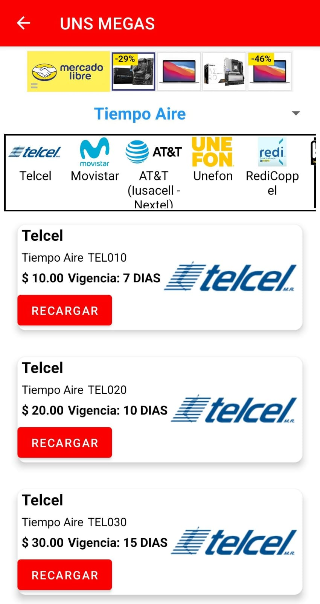

Ingeniero en Desarrollo de Software | Desarrollador Web & Android
Como profesional, soy comprometido y disciplinado, siempre dispuesto a aportar ideas y asumir nuevos retos. Disfruto el trabajo en equipo y, sobre todo, colaborar para ayudar a los demás.
Busco seguir creciendo en el mundo del desarrollo de software, aprendiendo constantemente nuevas tecnologías y aplicándolas en proyectos desafiantes.
Soy un apasionado del desarrollo de software, con más de 5 años de experiencia como Encargado de Turno en Oxxo Gas.
Supervisé las operaciones diarias, administración de efectivo y manejo de personal. Ofrecí atención al cliente y enfoqué mis esfuerzos en optimizar procesos internos.
Participé en proyectos escolares, integrando visión artificial (ML Kit) y creando aplicaciones web y móviles. Aprendí a planificar y diseñar soluciones enfocadas en la experiencia del usuario.
Creé una plataforma de recargas electrónicas, desarrollando tanto el backend web como la aplicación Android.
Disponible en la Play Store para su uso en dispositivos Android.
